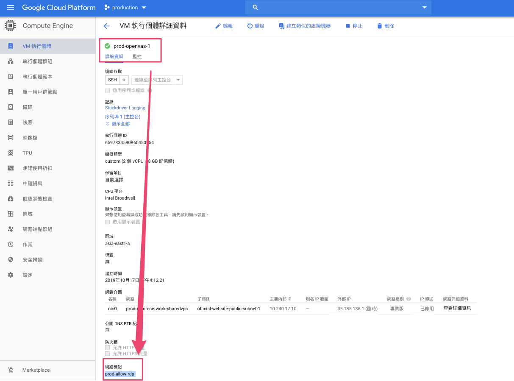

[Linux]遺失pam_tally.so 造成ssh登入失敗
[ Linux ] PAM Issue Lock ssh Login
1. Error message
客戶用即有 disk開一台vm，無法正常ssh
使用serial port 連線和logging，觀察到gcp一直嘗試把itsupport寫入group-sudoers，但無法正常ssh (上圖是開serial port，下圖ssh error)，經檢查網路與防火牆皆正常
PAM unable to open
訊息指出PAM unable to open /usr/lib64/security/pam_tally.so
參考文件
RHEL Resolution
Redhat Solution 也對passwd: PAM unable to dlopen(/lib/security/pam_tally.so) 此提供解法
對目標是**passwd**內地簡書對於pam linux登入失敗的處理
直接使用
pam_tally --user對user解鎖
2. History Trace
出問題的open-vas vm 關機，將disk掛載到其它的vm進行檢測
發現有對pam.d 調整，推斷出是PAM導致ssh錯誤
3. 補齊PAM .so檔
作法
- 檢查系統報錯的檔案
pam_tally.so，確實缺少此檔案 - 我們檢查過disk有中有相同的so檔，名為
pam_tally2.so - 建立檔案連結，把
pam_tally2.so指給pam_tally.so - 完成連結後，umount disk，在新開vm並使用即有disk
- 開機正常可正常ssh
Step1:
檢查檔案
# 取得disk資訊，sdb是新掛進來的disk
# 而sdb1是有經過format的partition
# 我們要把/dev/sdb1 掛在新的系統上
$lsblk
$mkdir -p /ossec
$mount /dev/sdb1 /ossec
# 設定新的根目錄
# 用意是把舊的disk當作系統碟的意思，才能對此partition進行檢測
# 切換命令提示會變成root
# 如擷圖 root@test-107
$chroot /ossec
# 根據報錯的訊息檢查pam_tally.so 檔案
# 發現遺失此檔案
$ls /usr/lib64/security/pam_tally.so$lsblk

To check pam_tally.so
Step2:
建立檔案連結ln
Step3:
確認剛才建立的連結檔pam_tally.so
Step4:
# 退出chroot，回到原本的系統
# 注意user變成 itsupport@test-107
$exit
# OS 層級的umount
$sudo umount /ossec
# 再進GCP console把physical disk刪除掉
# 或使用detach-disk
gcloud compute instances detach-disk <YOUR_INSTANCE> --disk=<YOUR_DISK> --zone=<YOUR_ZONE>Step5:
可以正常ssh 連線了
結論
PAM是保護ssh的第三把鎖，但也有可能設定不當造成ssh失效
[ Firewall ] Bastion-linux RDP Issue
Firewall 套用模式有三種
- 網路中所有instance
- 指定的目標標記
- 指定的服務帳戶
作法
- 檢查這條policy是採用
指定的目標標記 - 因此vm也要套用上對應的
tag:prod-allow-rdp此firewall才會生效
Step1
Step2

結論 ：
firewall使用的目標最用方式有三種，在現在production目前都有使用中
要注意instance與firewall彼此的對應關系